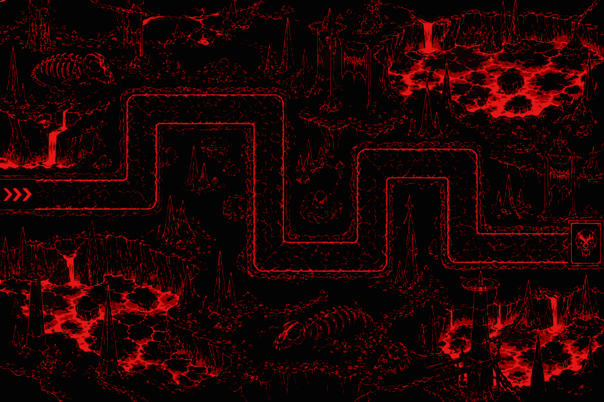

Defenda a torre: construa sentinelas nos sigilos e sobreviva a 5 ondas.
ONDAS 0 / 5 · Toque em um sigilo para erguer uma torre.
SINAL 100TORRE 10ENTRADA → PORTAL

Escolha uma torre e toque em um sigilo numerado. Alguns sigilos cobram sinal para abrir. Teclado: Tab e Enter para construir · 1 / 2 / 3 / 4 para escolher · Espaço para chamar onda.
Arte indisponível. O percurso continua disponível no mapa simplificado.